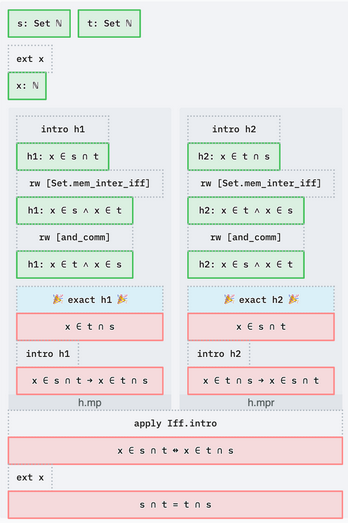
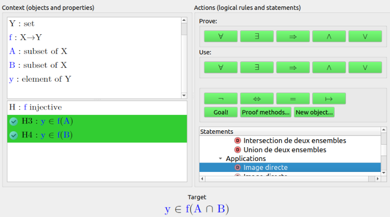

Proof Assistants for Teaching: a Survey
Proof assistants are increasingly used in education, but the reported teaching experiments and educational adaptations are scattered across the literature. The survey collects prior work on using proof assistants for mostly undergraduate teaching.
It reviews teaching experiments with Mizar, Coq, Isabelle, Lean and other systems in logic, mathematics and computer science. It also covers tutoring systems and proof assistants designed for education, including geometry provers. It discusses interface adaptations of general-purpose provers, such as web editors, proof-tree displays and proof-by-pointing. Finally, it covers controlled natural-language input and natural-language output of proofs. Lean material includes courses using Lean 3 and Lean 4, the Deaduction front-end, Paperproof and ProofWidgets.


Proof assistants for teaching are diverse in design, proof language, interaction mode, proof visualization and student feedback. Teaching material is widespread in logic and software foundations. Didactic evaluation of these tools, especially for mathematics teaching, is still at an early stage.